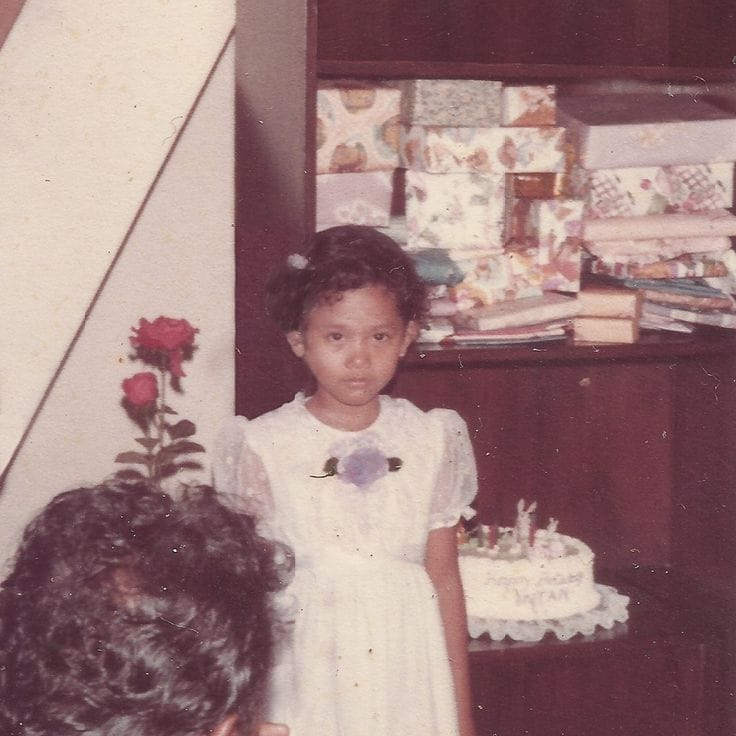

Nadin Amizah dikenal lewat musik pop folk yang lembut, petikan akustik yang hangat, dan lirik puitis tentang cinta, keluarga, serta perjalanan mengenal diri.
Dengan bahasa yang dekat dan jujur, musik Nadin banyak menyentuh pendengar Gen Z yang sedang bertumbuh, mencari makna, dan belajar berdamai dengan diri sendiri. Suaranya seolah mengingatkan bahwa menjadi rapuh bukan berarti lemah, dari sanalah kita mulai memahami diri.
15.9M
Spotify Followers
10.5M
Monthly Listeners
3
Official Full Albums